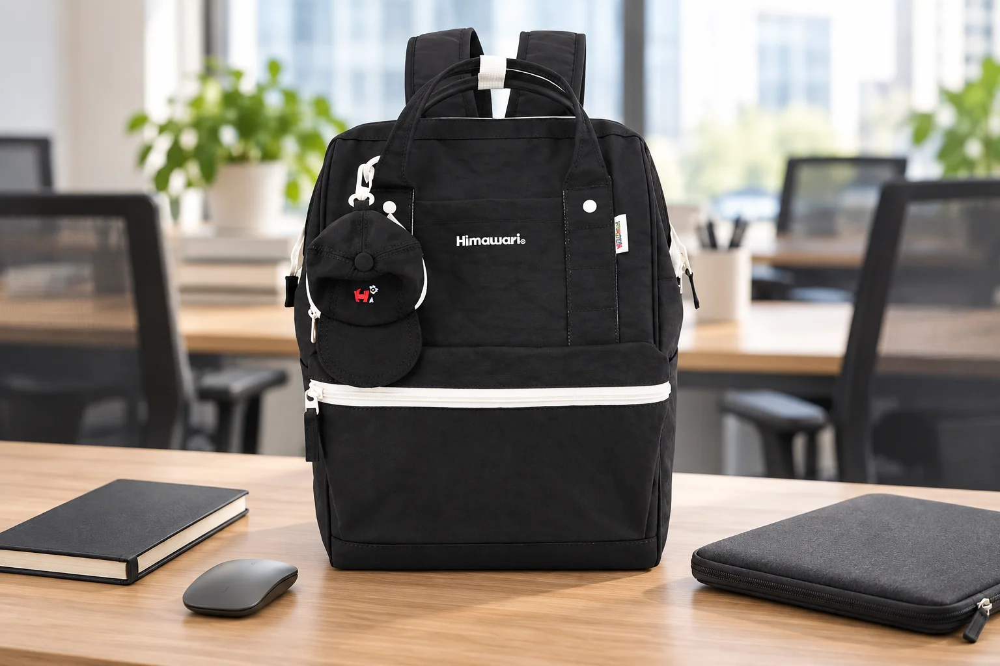

공유 오피스의 백팩: 자리를 옮겨도 준비물이 따라오도록

오전에는 창가 책상, 오후에는 회의실에서 일하는 날이 있습니다. 자리가 바뀔 때마다 충전기와 마우스, 노트를 따로 챙기다 보면 책상 아래 케이블 하나가 남기 쉽습니다. 이런 날의 백팩은 출퇴근 때만 사용하는 가방이 아니라 업무 도구가 돌아갈 자리입니다. 많은 물건을 펼치기보다 지금 할 일에 맞는 작은 작업 단위를 만들어보세요.
책상을 채우기보다 첫 작업에 필요한 것만 꺼냅니다
자리를 잡으면 가방 안의 물건을 전부 꺼내놓지 말고 첫 업무에 필요한 도구부터 꺼내세요. 문서 작성이라면 노트북과 마우스, 메모할 노트 정도로 시작하고 사용하지 않는 액세서리는 가방에 남겨둡니다. 어떤 물건이 책상 위에 나와 있는지 파악하기 쉬워지면 이동할 때 다시 챙기는 시간도 줄어듭니다. 다른 사람과 공유하는 책상에는 작은 물건을 여러 곳에 나눠두지 않고, 정해둔 한쪽 영역 안에서 사용하는 방식이 편합니다.
임시로 빼둔 파우치는 가방의 빈자리를 알려줍니다
도구가 들어 있던 빈 파우치를 서랍 속에 넣어버리면 퇴실 때 잊기 쉽습니다. 가방 안에 열어 두거나 책상 위 정해진 자리에 두어 회수할 물건을 떠올리는 기준으로 사용하세요. 장비를 묶을 때도 모든 전자기기를 한꺼번에 담기보다 함께 사용하는 것끼리 정합니다. 예를 들어 마우스와 연결용 작은 어댑터는 사용 후 같은 주머니로 돌아가게 합니다. 작은 연결 장치가 컴퓨터 옆면에 꽂힌 채 남아 있지 않은지도 이동 전에 확인합니다.
회의실로 갈 때 손에 쌓아 들지 않습니다
짧은 이동이라도 기기 위에 노트와 마우스를 겹쳐 들면 문을 열 때 불편할 수 있습니다. 가방에 넣어 옮길 물건과 손으로 안정적으로 들 물건을 정하고, 연결된 선은 먼저 분리하세요. 케이블을 잡아당겨 뽑거나 전원 어댑터를 연결한 채 가방에 밀어 넣지 않습니다. 전자기기의 이동과 보관 상태는 해당 기기 안내에 맞추고, 뜨거운 장비는 충분히 식힌 뒤 정리합니다. 일상 백팩을 사용하는 것만으로 기기 보호나 수납 적합성이 보장되지는 않습니다.
떠나기 전 책상 위보다 아래를 한 번 더 봅니다
노트북을 닫은 뒤 눈에 잘 보이는 도구부터 넣고, 마지막에는 콘센트와 책상 아래, 의자 주변을 확인합니다. 충전기가 공용 비품인지 개인 물건인지도 구분해두면 다른 사람의 것을 잘못 가져오는 일을 줄일 수 있습니다. 서랍을 사용했다면 안쪽을 직접 확인하고, 민감한 문서가 책상에 남지 않도록 회수하세요. 매번 긴 목록을 작성하기보다 자신이 자주 놓치는 위치 두세 곳을 정해 같은 순서로 보는 편이 꾸준히 실천하기 좋습니다.
No.9007을 고를 때도 실제 작업 도구가 기준입니다
대표 이미지의 Himawari No.9007은 블랙 원단과 흰색 지퍼가 대비되는 제품입니다. 노트와 마우스, 슬리브를 옆에 둔 연출이며 노트북의 수납을 검증한 사진은 아닙니다. 제품을 선택할 때는 실제 기기와 보호 슬리브의 치수, 가방 입구와 내부 공간을 확인해주세요. 책상에서 꺼냈다가 다시 담는 일이 잦다면 디자인뿐 아니라 이 동작이 자연스러운지도 중요합니다. 업무를 마친 뒤 가방을 닫았을 때 오늘 꺼낸 도구가 모두 돌아왔는지 확인하며 하루를 마무리하세요.
참고·안내
- Himawari No.9007 제품 정보
- 실제 Himawari No.9007 제품 사진을 참조해 만든 AI 연출 이미지입니다. 주변 소품은 제품 구성에 포함되지 않으며 수납·성능 시험을 나타내지 않습니다.
자주 묻는 질문
회의실에 갈 때도 백팩에 전부 담아야 하나요?
이동할 업무에 필요한 것만 챙기되 기기 위에 여러 물건을 불안정하게 쌓지 마세요. 남겨둘 물건의 보관은 공간의 이용 안내를 따르세요.
노트북용이라고 쓰여 있으면 제 기기도 들어가나요?
제품 이름만으로 판단하기 어렵습니다. 슬리브를 포함한 실제 크기와 가방의 입구·내부 치수를 확인해야 합니다.